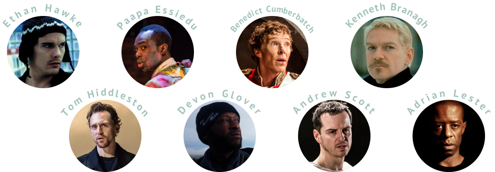
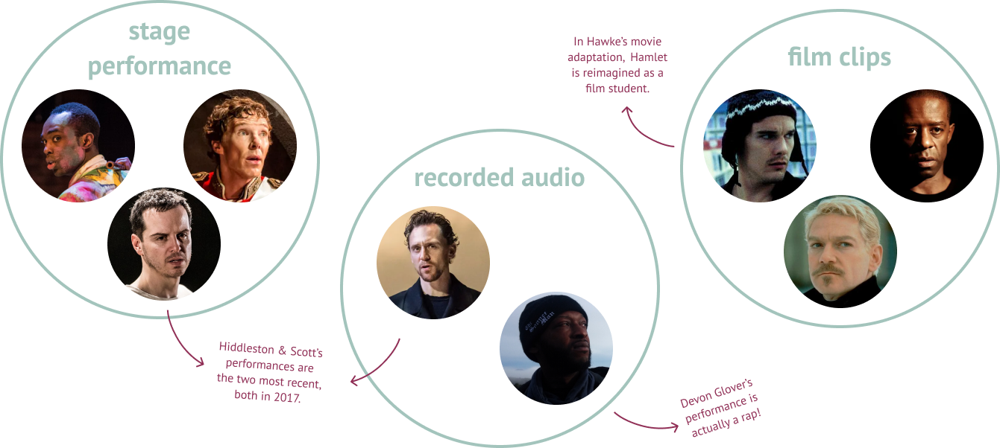
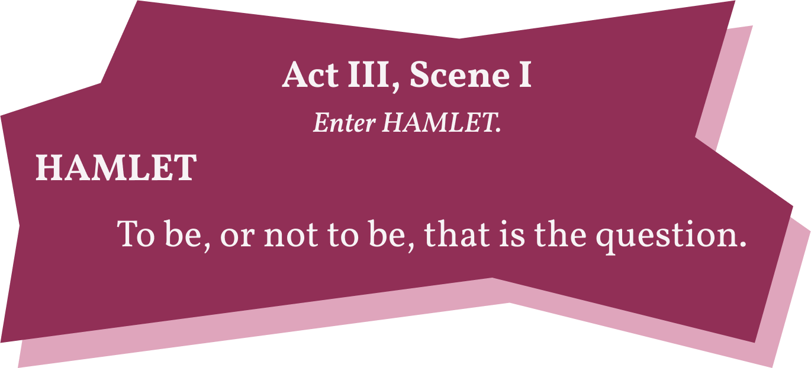
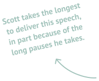
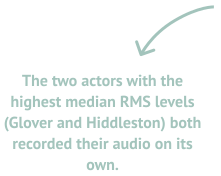

Let’s break this data down. Most of the actors take their longest pause (or one of their longest pauses) around the same lines.

What can data teach us about Shakespeare’s most famous speech?
We analyzed the audio of 8 performances of Hamlet’s Act III Scene I soliloquy.
From this analysis, we located aspects of each performance that could shed light on the text as a whole: speed and volume.
Let’s get to know these performances better. Three of them (Essiedu, Cumberbatch, and Scott) are stage performances, three are audio recordings (Hiddleston, Glover, and Lester), and two are film scenes (Hawke and Branagh).
What can we actually learn about the soliloquy from these performances? Let’s demo this analysis using the soliloquy’s incredibly famous first line:
This graph shows how many seconds each actor spends on the first line. Note the range of this data: Andrew Scott spends around 11 seconds on the first ten words, but Devon Glover, Ethan Hawke, and Tom Hiddleston all spend around 3.
From this, we can learn something about each actor's interpretations of the opening question, which drives the rest of the soliloquy.
Those who give it more time emphasize the challenge of solving the question, because they must take pauses or draw out words, which creates a sense of measured, slow contemplation.
However, the actors who spend less time speaking the opening lines avoid pauses or drawn-out words, which has the effect of instilling urgency and building momentum in the opening line.
This graph visualizes the volume of each actor’s audio file during the first 10 words. Most actors are clustered in volume around the -35 to -45 mean RMS level point, but there are two primary outliers: Branagh and Glover.
Glover is louder than the rest in large part because of the medium of his performance (music, which requires a backing track that increases the volume); conversely, Branagh also takes advantage of his cinematic medium, speaking the first line very quietly. He can do this because he need not worry about projecting his voice across a theater like Scott or Essiedu—this allows him to practically whisper the first line, emphasizing its introspective quality.
Also interesting is the dip in Hiddleston’s volume around the word “that”—this indicates that he took a long pause before saying the last four words that registered as near silence in our analysis of the audio data.
One key piece of data we get from analyzing the audio performances is timestamps: on which second does each word fall?
From this, we can learn quite a lot. One revealing metric is pause lengths—which actor takes the longest pause, and where does he take them?
Let’s break this data down. Most of the actors take their longest pause (or one of their longest pauses) around the same lines.
A closer look at these pauses reveals their effects on how the actors interpret certain lines.

Onto the next section...

~write conclusion~ and add fun graphics!
Another data point we can glean from audio files is loudness. The RMS level approximates loudness, and the median RMS level for each actor’s performance is visualized below—the lower the number, the lower the estimated loudness!
This can highlight each actors’ medium, the pauses they take, the lines they emphasize with increased loudness, and more.
Which line does each actor say the loudest?

Toggle this graph to isolate and track each actor's volume throughout the speech.
This graph visualizes the volume of each actor’s audio file during the first 10 words. Most actors are clustered in volume around the -35 to -45 mean RMS level point, but there are two primary outliers: Branagh and Glover.
write! and add streamgraph